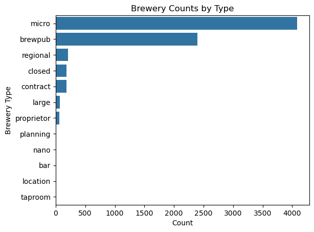
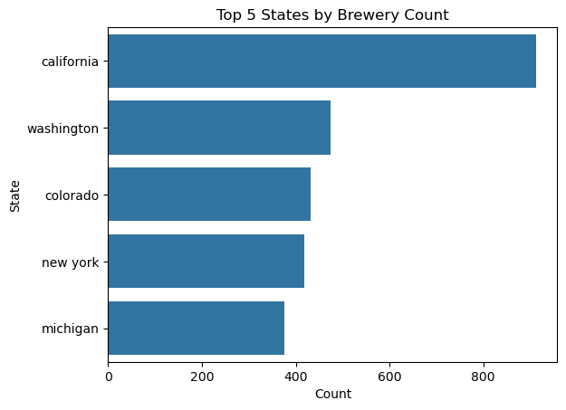
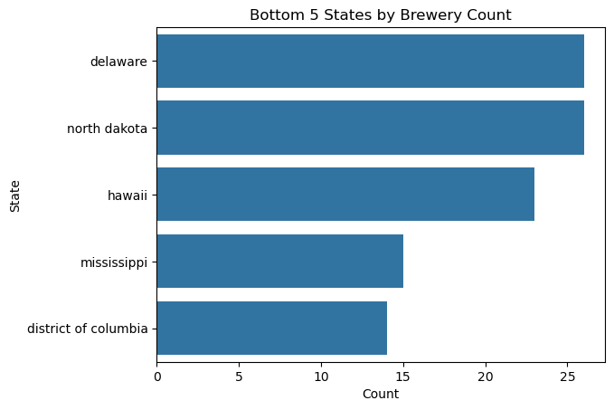

Code
# import libraries
import requests
import json
import numpy as np
import pandas as pdThe goal of this is to scrape the brewery data avaiable for breweries in the US from the open project and database API found at Open Brewery DB.
# pull data with while loop (extracts all database data)
data_bool = True
page = 1
while data_bool == True:
url = f'https://api.openbrewerydb.org/v1/breweries?page={page}&per_page=200'
response = requests.get(url)
data = response.json()
if len(data) == 0:
data_bool = False
break
if page == 1:
data_df = pd.DataFrame(data)
else:
data_df = pd.concat([data_df, pd.DataFrame(data)])
page += 1
# reset index
data_df.reset_index(inplace = True, drop = True)| id | name | brewery_type | address_1 | address_2 | address_3 | city | state_province | postal_code | country | longitude | latitude | phone | website_url | state | street | |
|---|---|---|---|---|---|---|---|---|---|---|---|---|---|---|---|---|
| 0 | 5128df48-79fc-4f0f-8b52-d06be54d0cec | (405) Brewing Co | micro | 1716 Topeka St | None | None | Norman | Oklahoma | 73069-8224 | United States | -97.46818222 | 35.25738891 | 4058160490 | http://www.405brewing.com | Oklahoma | 1716 Topeka St |
| 1 | 9c5a66c8-cc13-416f-a5d9-0a769c87d318 | (512) Brewing Co | micro | 407 Radam Ln Ste F200 | None | None | Austin | Texas | 78745-1197 | United States | None | None | 5129211545 | http://www.512brewing.com | Texas | 407 Radam Ln Ste F200 |
| 2 | 34e8c68b-6146-453f-a4b9-1f6cd99a5ada | 1 of Us Brewing Company | micro | 8100 Washington Ave | None | None | Mount Pleasant | Wisconsin | 53406-3920 | United States | -87.88336350209435 | 42.72010826899558 | 2624847553 | https://www.1ofusbrewing.com | Wisconsin | 8100 Washington Ave |
| 3 | ef970757-fe42-416f-931d-722451f1f59c | 10 Barrel Brewing Co | large | 1501 E St | None | None | San Diego | California | 92101-6618 | United States | -117.129593 | 32.714813 | 6195782311 | http://10barrel.com | California | 1501 E St |
| 4 | 6d14b220-8926-4521-8d19-b98a2d6ec3db | 10 Barrel Brewing Co | large | 62970 18th St | None | None | Bend | Oregon | 97701-9847 | United States | -121.281706 | 44.08683531 | 5415851007 | http://www.10barrel.com | Oregon | 62970 18th St |
| 5 | e2e78bd8-80ff-4a61-a65c-3bfbd9d76ce2 | 10 Barrel Brewing Co | large | 1135 NW Galveston Ave Ste B | None | None | Bend | Oregon | 97703-2465 | United States | -121.3288021 | 44.0575649 | 5415851007 | None | Oregon | 1135 NW Galveston Ave Ste B |
| 6 | e432899b-7f58-455f-9c7b-9a6e2130a1e0 | 10 Barrel Brewing Co | large | 1411 NW Flanders St | None | None | Portland | Oregon | 97209-2620 | United States | -122.6855056 | 45.5259786 | 5032241700 | http://www.10barrel.com | Oregon | 1411 NW Flanders St |
| 7 | 9f1852da-c312-42da-9a31-097bac81c4c0 | 10 Barrel Brewing Co - Bend Pub | large | 62950 NE 18th St | None | None | Bend | Oregon | 97701 | United States | -121.2809536 | 44.0912109 | 5415851007 | None | Oregon | 62950 NE 18th St |
| 8 | ea4f30c0-bce6-416b-8904-fab4055a7362 | 10 Barrel Brewing Co - Boise | large | 826 W Bannock St | None | None | Boise | Idaho | 83702-5857 | United States | -116.202929 | 43.618516 | 2083445870 | http://www.10barrel.com | Idaho | 826 W Bannock St |
| 9 | 1988eb86-f0a2-4674-ba04-02454efa0d31 | 10 Barrel Brewing Co - Denver | large | 2620 Walnut St | None | None | Denver | Colorado | 80205-2231 | United States | -104.9853655 | 39.7592508 | 7205738992 | None | Colorado | 2620 Walnut St |
United States 7972
Ireland 70
England 62
South Korea 61
Poland 34
Portugal 14
Austria 14
Scotland 10
Sweden 6
France 3
Isle of Man 2
United States 1
Name: country, dtype: int64id 0
name 0
brewery_type 0
address_1 768
address_2 7968
address_3 7973
city 0
state_province 0
postal_code 0
country 0
longitude 2326
latitude 2326
phone 790
website_url 1132
state 0
street 768
dtype: int64| id | name | brewery_type | city | postal_code | country | longitude | latitude | phone | website_url | state | street |
|---|
With this amount of data and for the purposes of our project, we could probably remove the rows which don’t contain a tier-1 address.
Most tier-2 and tier-3 addresses are missing, so let’s just remove those columns.
Additionally, street is an identical column to address_1 as is state to state_province. We can remove the duplicate columns.
# drop all locations without addy 1, and remove addy 2 and addy 3 columns
data_us.dropna(subset = ['address_1'], axis = 0, inplace = True)
data_us.drop(['address_2', 'address_3'], axis = 1, inplace = True)
# remove address_1 and state_province columns (these are equivalents of street and state)
data_us.drop(['address_1', 'state_province'], axis = 1, inplace = True)C:\Users\carlj\AppData\Local\Temp\ipykernel_20660\792256491.py:2: SettingWithCopyWarning:
A value is trying to be set on a copy of a slice from a DataFrame
See the caveats in the documentation: https://pandas.pydata.org/pandas-docs/stable/user_guide/indexing.html#returning-a-view-versus-a-copy
data_us.dropna(subset = ['address_1'], axis = 0, inplace = True)
C:\Users\carlj\AppData\Local\Temp\ipykernel_20660\792256491.py:3: SettingWithCopyWarning:
A value is trying to be set on a copy of a slice from a DataFrame
See the caveats in the documentation: https://pandas.pydata.org/pandas-docs/stable/user_guide/indexing.html#returning-a-view-versus-a-copy
data_us.drop(['address_2', 'address_3'], axis = 1, inplace = True)
C:\Users\carlj\AppData\Local\Temp\ipykernel_20660\792256491.py:6: SettingWithCopyWarning:
A value is trying to be set on a copy of a slice from a DataFrame
See the caveats in the documentation: https://pandas.pydata.org/pandas-docs/stable/user_guide/indexing.html#returning-a-view-versus-a-copy
data_us.drop(['address_1', 'state_province'], axis = 1, inplace = True)We should apply our cleaning function to the rest of the applicable text-based columns.
# clean name, brewery_type, city, state, street, and website_url columns
data_us['name'] = data_us['name'].apply(func=lower_strip)
data_us['brewery_type'] = data_us['brewery_type'].apply(func=lower_strip)
data_us['city'] = data_us['city'].apply(func=lower_strip)
data_us['state'] = data_us['state'].apply(func=lower_strip)
data_us['street'] = data_us['street'].apply(func=lower_strip)
data_us['website_url'] = data_us['website_url'].apply(func=lower_strip)C:\Users\carlj\AppData\Local\Temp\ipykernel_20660\2023110785.py:2: SettingWithCopyWarning:
A value is trying to be set on a copy of a slice from a DataFrame.
Try using .loc[row_indexer,col_indexer] = value instead
See the caveats in the documentation: https://pandas.pydata.org/pandas-docs/stable/user_guide/indexing.html#returning-a-view-versus-a-copy
data_us['name'] = data_us['name'].apply(func=lower_strip)
C:\Users\carlj\AppData\Local\Temp\ipykernel_20660\2023110785.py:3: SettingWithCopyWarning:
A value is trying to be set on a copy of a slice from a DataFrame.
Try using .loc[row_indexer,col_indexer] = value instead
See the caveats in the documentation: https://pandas.pydata.org/pandas-docs/stable/user_guide/indexing.html#returning-a-view-versus-a-copy
data_us['brewery_type'] = data_us['brewery_type'].apply(func=lower_strip)
C:\Users\carlj\AppData\Local\Temp\ipykernel_20660\2023110785.py:4: SettingWithCopyWarning:
A value is trying to be set on a copy of a slice from a DataFrame.
Try using .loc[row_indexer,col_indexer] = value instead
See the caveats in the documentation: https://pandas.pydata.org/pandas-docs/stable/user_guide/indexing.html#returning-a-view-versus-a-copy
data_us['city'] = data_us['city'].apply(func=lower_strip)
C:\Users\carlj\AppData\Local\Temp\ipykernel_20660\2023110785.py:5: SettingWithCopyWarning:
A value is trying to be set on a copy of a slice from a DataFrame.
Try using .loc[row_indexer,col_indexer] = value instead
See the caveats in the documentation: https://pandas.pydata.org/pandas-docs/stable/user_guide/indexing.html#returning-a-view-versus-a-copy
data_us['state'] = data_us['state'].apply(func=lower_strip)
C:\Users\carlj\AppData\Local\Temp\ipykernel_20660\2023110785.py:6: SettingWithCopyWarning:
A value is trying to be set on a copy of a slice from a DataFrame.
Try using .loc[row_indexer,col_indexer] = value instead
See the caveats in the documentation: https://pandas.pydata.org/pandas-docs/stable/user_guide/indexing.html#returning-a-view-versus-a-copy
data_us['street'] = data_us['street'].apply(func=lower_strip)
C:\Users\carlj\AppData\Local\Temp\ipykernel_20660\2023110785.py:7: SettingWithCopyWarning:
A value is trying to be set on a copy of a slice from a DataFrame.
Try using .loc[row_indexer,col_indexer] = value instead
See the caveats in the documentation: https://pandas.pydata.org/pandas-docs/stable/user_guide/indexing.html#returning-a-view-versus-a-copy
data_us['website_url'] = data_us['website_url'].apply(func=lower_strip)id 0
name 0
brewery_type 0
city 0
postal_code 0
country 0
longitude 1683
latitude 1683
phone 543
website_url 787
state 0
street 0
dtype: int64At the very least, we have full addresses. It’s very likely that longitude/latitude, phone numbers, and websites won’t be relevant. We’ll keep these rows for now, and consider them copmlete enough.
| id | name | brewery_type | city | postal_code | country | longitude | latitude | phone | website_url | state | street | |
|---|---|---|---|---|---|---|---|---|---|---|---|---|
| 0 | 5128df48-79fc-4f0f-8b52-d06be54d0cec | (405) brewing co | micro | norman | 73069-8224 | united states | -97.46818222 | 35.25738891 | 4058160490 | http://www.405brewing.com | oklahoma | 1716 topeka st |
| 1 | 9c5a66c8-cc13-416f-a5d9-0a769c87d318 | (512) brewing co | micro | austin | 78745-1197 | united states | None | None | 5129211545 | http://www.512brewing.com | texas | 407 radam ln ste f200 |
| 2 | 34e8c68b-6146-453f-a4b9-1f6cd99a5ada | 1 of us brewing company | micro | mount pleasant | 53406-3920 | united states | -87.88336350209435 | 42.72010826899558 | 2624847553 | https://www.1ofusbrewing.com | wisconsin | 8100 washington ave |
| 3 | ef970757-fe42-416f-931d-722451f1f59c | 10 barrel brewing co | large | san diego | 92101-6618 | united states | -117.129593 | 32.714813 | 6195782311 | http://10barrel.com | california | 1501 e st |
| 4 | 6d14b220-8926-4521-8d19-b98a2d6ec3db | 10 barrel brewing co | large | bend | 97701-9847 | united states | -121.281706 | 44.08683531 | 5415851007 | http://www.10barrel.com | oregon | 62970 18th st |
| 5 | e2e78bd8-80ff-4a61-a65c-3bfbd9d76ce2 | 10 barrel brewing co | large | bend | 97703-2465 | united states | -121.3288021 | 44.0575649 | 5415851007 | None | oregon | 1135 nw galveston ave ste b |
| 6 | e432899b-7f58-455f-9c7b-9a6e2130a1e0 | 10 barrel brewing co | large | portland | 97209-2620 | united states | -122.6855056 | 45.5259786 | 5032241700 | http://www.10barrel.com | oregon | 1411 nw flanders st |
| 7 | 9f1852da-c312-42da-9a31-097bac81c4c0 | 10 barrel brewing co - bend pub | large | bend | 97701 | united states | -121.2809536 | 44.0912109 | 5415851007 | None | oregon | 62950 ne 18th st |
| 8 | ea4f30c0-bce6-416b-8904-fab4055a7362 | 10 barrel brewing co - boise | large | boise | 83702-5857 | united states | -116.202929 | 43.618516 | 2083445870 | http://www.10barrel.com | idaho | 826 w bannock st |
| 9 | 1988eb86-f0a2-4674-ba04-02454efa0d31 | 10 barrel brewing co - denver | large | denver | 80205-2231 | united states | -104.9853655 | 39.7592508 | 7205738992 | None | colorado | 2620 walnut st |
For future exploration, use data/open-brewery-db.csv pulled and cleaned by scripts/open-brewery-db-extractor.py.
<class 'pandas.core.frame.DataFrame'>
RangeIndex: 7205 entries, 0 to 7204
Data columns (total 12 columns):
# Column Non-Null Count Dtype
--- ------ -------------- -----
0 id 7205 non-null object
1 name 7205 non-null object
2 brewery_type 7205 non-null object
3 city 7205 non-null object
4 postal_code 7205 non-null object
5 country 7205 non-null object
6 longitude 5522 non-null float64
7 latitude 5522 non-null float64
8 phone 6662 non-null object
9 website_url 6418 non-null object
10 state 7205 non-null object
11 street 7205 non-null object
dtypes: float64(2), object(10)
memory usage: 675.6+ KB| longitude | latitude | |
|---|---|---|
| count | 5522.000000 | 5.522000e+03 |
| mean | -97.773401 | 1.563181e+03 |
| std | 18.756119 | 1.131958e+05 |
| min | -159.586522 | -4.478217e+01 |
| 25% | -117.590895 | 3.617073e+01 |
| 50% | -93.191783 | 4.023997e+01 |
| 75% | -81.937273 | 4.318590e+01 |
| max | -66.983481 | 8.411641e+06 |
id 7205
name 7078
brewery_type 12
city 2704
postal_code 6999
country 1
longitude 5438
latitude 5438
phone 6486
website_url 6069
state 51
street 7113
dtype: int64Index(['micro', 'brewpub', 'regional', 'closed', 'contract', 'large',
'proprietor', 'planning', 'nano', 'bar', 'location', 'taproom'],
dtype='object')
california 829
washington 459
colorado 390
new york 370
michigan 353
Name: state, dtype: int64delaware 26
north dakota 26
hawaii 23
mississippi 15
district of columbia 14
Name: state, dtype: int64

us_state_to_abbrev = {
"alabama": "AL",
"alaska": "AK",
"arizona": "AZ",
"arkansas": "AR",
"california": "CA",
"colorado": "CO",
"connecticut": "CT",
"delaware": "DE",
"florida": "FL",
"georgia": "GA",
"hawaii": "HI",
"idaho": "ID",
"illinois": "IL",
"indiana": "IN",
"iowa": "IA",
"kansas": "KS",
"kentucky": "KY",
"louisiana": "LA",
"maine": "ME",
"maryland": "MD",
"massachusetts": "MA",
"michigan": "MI",
"minnesota": "MN",
"mississippi": "MS",
"missouri": "MO",
"montana": "MT",
"nebraska": "NE",
"nevada": "NV",
"new hampshire": "NH",
"new jersey": "NJ",
"new mexico": "NM",
"new york": "NY",
"north carolina": "NC",
"north dakota": "ND",
"ohio": "OH",
"oklahoma": "OK",
"oregon": "OR",
"pennsylvania": "PA",
"rhode island": "RI",
"south carolina": "SC",
"south dakota": "SD",
"tennessee": "TN",
"texas": "TX",
"utah": "UT",
"vermont": "VT",
"virginia": "VA",
"washington": "WA",
"west virginia": "WV",
"wisconsin": "WI",
"wyoming": "WY",
"district of columbia": "DC",
}